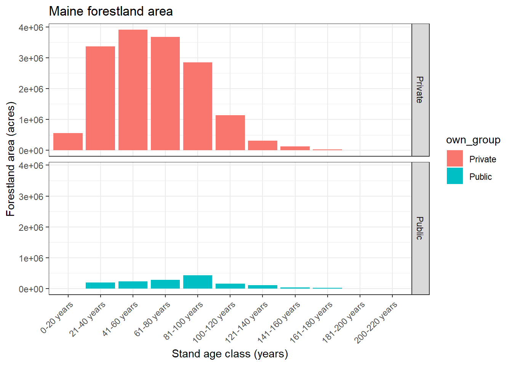
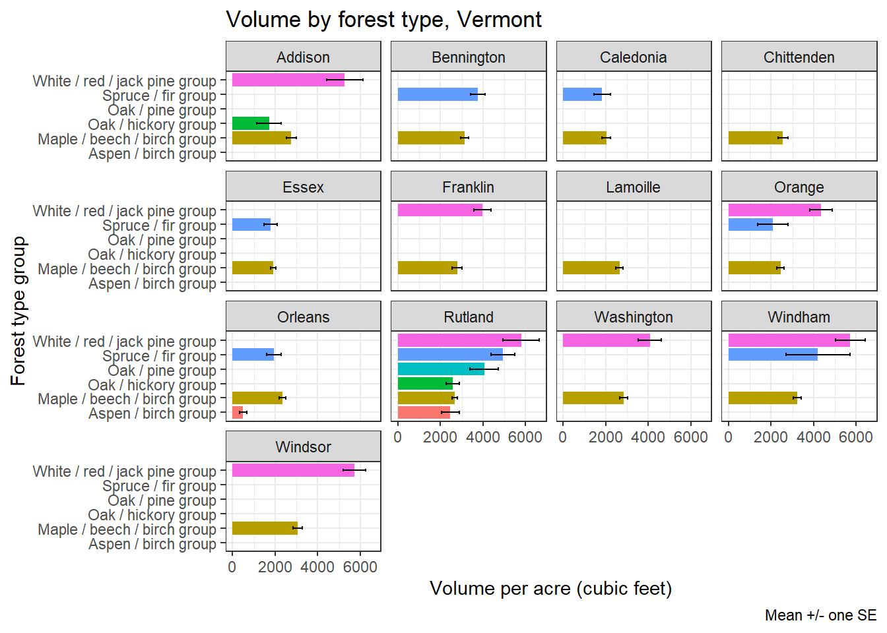

# Load necessary R packages
library(tidyverse)
library(httr)
library(jsonlite)
library(rlist)Get FIA data using the EVALIDator API and R
# The function fiadb_api_POST() gets an FIADB-API report and returns the data
# See description: https://apps.fs.usda.gov/fiadb-api/
fiadb_api_POST <- function(argList){
# make request
resp <- POST(url="https://apps.fs.usda.gov/fiadb-api/fullreport",
body=argList, encode="form")
# parse response from JSON to R list
respObj <- content(resp, "parsed", encoding = "ISO-8859-1")
# create empty output list
outputList <- list()
# add estimates data frame to output list
outputList[['estimates']] <- as.data.frame(do.call(rbind,respObj$estimates))
# if estimate includes totals and subtotals, add those data frames to output list
if ('subtotals' %in% names(respObj)){
subtotals <- list()
# one subtotal data frame for each grouping variable
for (i in names(respObj$subtotals)){
subtotals[[i]] <- as.data.frame(do.call(rbind,respObj$subtotals[[i]]))
}
outputList[['subtotals']] <- subtotals
# totals data frame
outputList[['totals']] <- as.data.frame(do.call(rbind,respObj$totals))
}
# add estimate metadata
outputList[['metadata']] <- respObj$metadata
return(outputList)
}Example 1: Forestland area by stand age class and ownership group for Maine
# Change the values in arg_list to obtain data
# snum = All of the possible FIA variables. See https://apps.fs.usda.gov/fiadb-api/fullreport/parameters/snum
# wc = State FIPS code/inventory year of data collections. See: https://apps.fs.usda.gov/fiadb-api/fullreport/parameters/wc
# rselected = row estimate grouping definition. See: https://apps.fs.usda.gov/fiadb-api/fullreport/parameters/rselected
# cselected = column estimate grouping definition. See: https://apps.fs.usda.gov/fiadb-api/fullreport/parameters/cselected
# outputFormat = output format. (NJSON is best in R)
arg_list <- list(snum = 2, # Area of forest land, in acres
wc = 232024, # Maine, 2024
rselected = 'Stand age 20 yr classes (0 to 500 plus)', # Row variable
cselected = 'Ownership group - Major', # Column variable
outputFormat = 'NJSON') # Output format
# Submit argument list to POST request function
post_data <- fiadb_api_POST(arg_list)
# Gather estimates to make data frame
forestland_me <- post_data[['estimates']]
head(forestland_me) ESTIMATE GRP1 GRP2 PLOT_COUNT SE SE_PERCENT
1 2328.563 `0001 0-20 years `0001 Public 1 1960.193 84.18038
2 555803.9 `0001 0-20 years `0002 Private 134 50589.9 9.102114
3 194130.1 `0002 21-40 years `0001 Public 40 31572.05 16.26334
4 3369471 `0002 21-40 years `0002 Private 675 120030.3 3.562289
5 230289.4 `0003 41-60 years `0001 Public 52 33415.4 14.51018
6 3913098 `0003 41-60 years `0002 Private 776 129764.5 3.316157
VARIANCE
1 3842357
2 2559338442
3 996794323
4 14407266660
5 1116588759
6 16838817024# Often the data frame returned from the API will need to be cleaned and organized before analysis and visualization.
# In this case, we need to convert some variables to numeric.
# We'll also extract the age class and ownership group from the GRP1 and GRP2 variables, and select only the variables we need for analysis
forestland_me <- as_tibble(forestland_me) |>
mutate(forest_area = as.numeric(ESTIMATE),
num_plots = as.numeric(PLOT_COUNT),
se = as.numeric(SE),
se_percent = as.numeric(SE_PERCENT),
var = as.numeric(VARIANCE),
age_class = substr(GRP1, 7, nchar(GRP1)),
own_group = ifelse(str_detect(GRP2, "Private"), "Private", "Public")) |>
select(age_class, own_group, forest_area, num_plots, se, se_percent, var)
head(forestland_me)# A tibble: 6 × 7
age_class own_group forest_area num_plots se se_percent var
<chr> <chr> <dbl> <dbl> <dbl> <dbl> <dbl>
1 0-20 years Public 2329. 1 1960. 84.2 3842357.
2 0-20 years Private 555804. 134 50590. 9.10 2559338442.
3 21-40 years Public 194130. 40 31572. 16.3 996794323.
4 21-40 years Private 3369471. 675 120030. 3.56 14407266660.
5 41-60 years Public 230289. 52 33415. 14.5 1116588759.
6 41-60 years Private 3913098. 776 129764. 3.32 16838817024.# Reorder age class factor levels for plotting
forestland_me$age_class <- factor(forestland_me$age_class, levels = c("0-20 years", "21-40 years", "41-60 years", "61-80 years", "81-100 years",
"100-120 years", "121-140 years", "141-160 years", "161-180 years", "181-200 years",
"200-220 years"))
# Plot forestland area by age class and ownership group in Maine
ggplot(forestland_me, aes(x = age_class, y = forest_area, fill = own_group)) +
geom_bar(stat = "identity") +
facet_grid(own_group ~ .) +
labs(x = "Stand age class (years)",
y = "Forestland area (acres)",
title = "Maine forestland area") +
theme_bw() +
theme(axis.text.x = element_text(angle = 45, hjust = 1))
Example 2: Average volume per acre on timberlands by county and forest type group in Vermont
# Change the values in arg_list to obtain data for volume per acre on timberlands by county and forest type group in Vermont.
# We'll add the sdenom argument to speify timberland area, only
arg_list <- list(snum = 574175, # Sound bole wood volume of live trees (timber species at least 5 inches d.b.h.), in cubic feet, on timberland
sdenom = 3, # Denominator for per acre estimates (timberland area)
wc = 502024 , # Vermont, 2024
rselected = 'Forest type group', # Row variable
cselected = 'County code and name', # Column variable
outputFormat = 'NJSON') # Output format
# Submit argument list to POST request function
post_data <- fiadb_api_POST(arg_list)
# Gather estimates to make data frame
volume_vt <- post_data[['estimates']]
head(volume_vt) DENOMINATOR_ESTIMATE DENOMINATOR_PLOT_COUNT DENOMINATOR_SE
1 20138.44 5 9472.004
2 1280.468 1 1484.224
3 18041.74 4 9778.419
4 8553.472 2 7174.781
5 25508.38 7 11519.56
6 20934.08 4 10791.9
DENOMINATOR_SE_PERCENT DENOMINATOR_VAR GRP1
1 47.03445 89718868 `0100 White / red / jack pine group
2 115.9127 2202922 `0100 White / red / jack pine group
3 54.19888 95617473 `0100 White / red / jack pine group
4 83.8815 51477476 `0100 White / red / jack pine group
5 45.1599 132700190 `0100 White / red / jack pine group
6 51.5518 116465036 `0100 White / red / jack pine group
GRP2 NUMERATOR_ESTIMATE NUMERATOR_PLOT_COUNT
1 `50001 50001 VT Addison 106051491 5
2 `50003 50003 VT Bennington 4144396 1
3 `50005 50005 VT Caledonia 72123697 4
4 `50007 50007 VT Chittenden 45865362 2
5 `50011 50011 VT Franklin 101245203 7
6 `50015 50015 VT Lamoille 88171849 4
NUMERATOR_SE NUMERATOR_SE_PERCENT NUMERATOR_VAR RATIO_ESTIMATE RATIO_SE
1 52490664 49.49545 2.75527e+15 5266.123 846.3796
2 4803880 115.9127 2.307726e+13 3236.626 0
3 38846308 53.86067 1.509036e+15 3997.603 357.58
4 42927557 93.59472 1.842775e+15 5362.192 960.2464
5 45976044 45.41059 2.113797e+15 3969.096 399.1322
6 47097312 53.41536 2.218157e+15 4211.88 836.0923
RATIO_SE_PERCENT RATIO_VAR
1 16.07216 716358.4
2 0 -4.764888e-09
3 8.944859 127863.4
4 17.90772 922073.1
5 10.056 159306.5
6 19.85081 699050.3# Clean and organize the data frame returned from the API.
# In this case, we need to convert some variables to numeric.
# We'll also extract the forest type group and county from the GRP1 and GRP2 variables, and select only the variables we need for analysis
volume_vt <- as_tibble(volume_vt) |>
mutate(volume_ac = as.numeric(RATIO_ESTIMATE),
num_plots = as.numeric(NUMERATOR_PLOT_COUNT),
se = as.numeric(RATIO_SE),
se_percent = as.numeric(RATIO_SE_PERCENT),
var = as.numeric(RATIO_VAR),
forest_type = substr(GRP1, 7, nchar(GRP1)),
county = substr(GRP2, 17, nchar(GRP2))) |>
select(county, forest_type, num_plots, volume_ac, se, se_percent, var) |>
relocate(county, forest_type, num_plots, volume_ac, se, se_percent, var)
head(volume_vt)# A tibble: 6 × 7
county forest_type num_plots volume_ac se se_percent var
<chr> <chr> <dbl> <dbl> <dbl> <dbl> <dbl>
1 Addison White / red / jack p… 5 5266. 846. 16.1 7.16e+5
2 Bennington White / red / jack p… 1 3237. 0 0 -4.76e-9
3 Caledonia White / red / jack p… 4 3998. 358. 8.94 1.28e+5
4 Chittenden White / red / jack p… 2 5362. 960. 17.9 9.22e+5
5 Franklin White / red / jack p… 7 3969. 399. 10.1 1.59e+5
6 Lamoille White / red / jack p… 4 4212. 836. 19.9 6.99e+5# Plot average volume per acre on timberlands by county and forest type group in Vermont.
# We'll filter to only include estimates based on at least 5 plots.
# We'll add error bars to show the standard error of the estimates.
volume_vt |>
filter(num_plots >= 5) |>
ggplot(aes(x = forest_type, y = volume_ac, fill = forest_type)) +
geom_bar(stat = "identity") +
geom_errorbar(aes(ymin = volume_ac - se, ymax = volume_ac + se), width = 0.2) +
coord_flip() +
facet_wrap(~ county) +
labs(x = "Forest type group",
y = "Volume per acre (cubic feet)",
title = "Volume by forest type, Vermont",
caption = "Mean +/- one SE") +
theme_bw() +
theme(legend.position = "none")